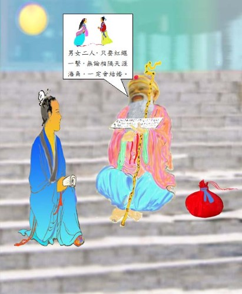

定婚店 太平廣記 卷第一百五十九
月下老人因李復言著述訂婚店的故事，在中國廣為流傳。民間認為姻緣天注定，同時有一個掌管婚姻大事的月下老人，在中國土地上，月下老人祠到處都有，有的附在於其他廟宇中，至於杭州，因為是定婚店的所在地，所以月下老人祠特別出名，祠中並有一副對聯，特別有意義：
願天下有情人都成了眷屬
是前生註定事莫錯過姻緣
訂婚店〈白話文〉李復言著 江銘輝譯
龍興寺門見面
杜陵有個名叫韋固的人，從小父母就過世。想要早一點娶妻，只是多次求親，都沒有成功。唐太宗貞觀二年（西元628年），他去清河遊歷，中途住在宋城（今杭州市）南面的旅店。旅客中有一個人為他提親，女方是以前的清河司馬（註）潘昉的女兒，希望韋固第二天清早在店西的龍興寺門見面。
（註：在唐朝司馬是五品的官員，司馬的職務就是協助當地的刺史辦事，但是更多時候只是虛名而已，沒有任何職權，幾乎成為了朝廷貶官的一個代名詞。）
月下老人
韋固求婚心切，第二天很早就趕去。到了廟前，月亮還在斜掛在天邊。他看見一個老人靠著一個巾袋，坐在台階上，藉著月光看書。韋固偷偷向書瞄一下，書上的字都不認識，韋固便問老人：「老先生看的是什麼書啊？我從小苦讀，沒有不認識的字，就是西方的梵文，我也能看懂，只有這本書上的字從來沒見過，為什麼？」老人笑著說：「這不是人間的書，你怎麼會見過。」韋固又問：「那麼是什麼書阿？」老人說：「陰間的書。」韋固問：「陰間的人，怎麼到這裡來？」老人說：「不是我不應該來，是你來的太早，凡是陰間的官員都管陽間的事，怎麼能不在人間行走呢？現在在路上行走的人，人和鬼各佔一半，只是你無法辨別罷！」韋固問：「那麼您管什麼事啊？」老人說：「天下的婚姻大事。」韋固心中暗喜，說：「我從小失去父母，想早一點結婚，以便多生兒女。這十多年來，多方求親，但都不能如願。現在有人到這裡來給我提潘司馬的女兒，能夠成功嗎？」老人回答：「不成，你的妻子才剛剛三歲，等到十七歲才能進到你的家。」韋固問：「你口袋裡裝的什麼東西？」老人回答：「紅繩啊！」用來繫夫妻兩人的腳。他們一生下來，我就偷偷地將紅繩綁在他們的腳上。不管這兩家是仇敵，還是貧富相差懸殊，或者是在天涯海角當官，相隔千山萬水，只要紅繩一繫，終生再也逃不掉了。你的腳已經和她的腳繫在一起了，你再找別的人又有什麼用呢？」韋固問：「我的妻子如今在哪裡？家在何處？」老人回答：「這個店北面賣菜那個老婦人家的女兒。」韋固問：「能去看一看嗎？」老人說：「陳老婦人經常抱她來，在這裡賣菜，你跟著我走，我指給你看。」

圖：老人說：「我是管婚姻，男女二人，只要紅繩一繫，無論相隔天涯海角，一定會結婚。」
殺人行兇
等到天亮了，相約的人沒有來。老人捲起書，背著口袋要走，韋固跟著老人來到菜市場，看見一個瞎了一隻眼看起來非常骯髒醜陋的老婦人，抱著一個三歲的女孩。老人指著女孩對韋固說：「那就是你的妻子。」韋固生氣地說：「我殺了她不就行了？」老人說：「這女孩命中註定大富大貴，還要跟著你享福呢？那裡會被殺呢？」說完老人突然不見了。韋固磨了一把刀子，交給僕人並吩咐：「你向來很會辦事，如果為我殺了那個女孩，我給你一萬錢。」僕人說：「好。」第二天，僕人將刀藏到袖子裡來到喧嘩熱鬧的市場，趁著人多的時候，刺了女孩一刀就跑，整個市場大亂，僕人因此可以逃脫。韋固問僕人說：「你刺中沒？」僕人說：「本來想刺她的心臟，可是沒刺到，刺到了眉間。」
新婚
姻緣前生注定
如此過了一年多，他逼問妻子。妻子流著眼淚哭泣著說：「我是郡守大人的侄女，不是他的親生女兒。我的父親生前當宋城縣令，死在任職上。當時我還在繈褓之中，母親和哥哥也相繼去逝。家裡剩下城南的一個宅院，乳母陳氏帶著我一齊居住，每天在離旅店不遠的市場賣菜度日。陳氏可憐我年紀小，不忍心一刻與我分離。三歲的時候，將我抱著走到市場，被一個狂徒所刺。刀的疤痕還在，所以用小花片蓋住。七、八年前，叔叔來到盧龍（唐朝時平州的治所 (今日的河北東北部)）任職，於是我跟在叔叔旁邊，並以他女兒的名義嫁給你。」韋固問：「陳氏是不是瞎一隻眼？」妻子說：「對，你怎麼知道的？」韋固說：「刺你的人就是我韋固，真是奇事阿！」便將事情的一切全部告訴妻子。從此夫妻更加敬愛，後來生了個男孩叫「鯤」，當了雁門（今山西代縣）太守。母親被封為太原郡（即今山西太原縣）太夫人。才知道陰德註定的事，是不會改變的。宋城縣長聽說了這件事，以那家旅店題名為：「訂婚店」。（出自《續幽怪錄》）
定婚店（原文）
杜陵韋固，少孤，思早娶婦，多歧，求婚不成。貞觀二年，將游清河，旅次宋城南店。客有以前清河司馬潘昉女為議者，來旦期於店西龍興寺門。固以求之意切，旦往焉。斜月尚明，有老人倚巾囊，坐於階上，向月檢書。覘之，不識其字。固問曰：「老父所尋者何書？固少小苦學，字書無不識者。西國梵字，亦能讀之。唯此書目所未覿，如何？」老人笑曰：「此非世間書，君因得見。」固曰：「然則何書也？」曰：「幽冥之書。」固曰：「幽冥之人，何以到此？」曰：「君行自平，非某不當來也。凡幽吏皆主人生之事，主（「主」原作「生」，據明抄本改）人可不行其中乎？今道途之行，人鬼各半，自不辨耳。」固曰：「然則君何主？」曰：「天下之婚牘耳。」固喜曰：「固少孤，嘗願早娶，以廣後嗣。爾來十年，多方求之，競不遂意。今者人有期此，與議潘司馬女，可以成乎？」曰：「未也，君之婦適三歲矣。年十七，當入君門。」因問囊中何物？曰：「赤繩子耳，以系夫婦之足，及其坐則潛用相系。雖仇敵之家，貴賤懸隔，天涯從宦，吳楚異鄉，此繩一系，終不可逭。君之腳已繫於彼矣，他求何益。」曰：「固妻安在？其家何為？」曰：「此店北賣菜家嫗女耳。」固曰：「可見乎？」曰：「陳嘗抱之來，賣菜於是。能隨我行，當示君。」及明，所期不至，老人卷書揭囊而行。固逐之入菜（「菜」原本作「米」，據明抄本改）市。有眇嫗，抱三歲女來，弊陋亦甚。老人指曰：「此君之妻也。」固怒曰：「殺之可乎？」老人曰：「此人命當食大祿，因子而食邑，庸可殺乎？」老人遂隱：「固磨一小刀，付其奴曰：「汝素幹事，能為我殺彼女，賜汝萬錢。」奴曰：「諾。」明日，袖刀入菜肆中，於眾中刺之而走。一市紛擾，奔走獲免。問奴曰：「所刺中否？」曰：「初刺其心，不幸才中眉間。」爾後求婚，終不遂。又十四年，以父蔭參相州軍（「軍」原作「君」，據明抄本改）。刺史王泰俾攝司戶掾（古代副官、佐吏的通称），專鞫獄，以為能，因妻以女。可年十六七，容色華麗。固稱愜之極。然其眉間常貼一花鈿，雖沐浴閒處，未嘗暫去。歲余，固逼問之，妻潸然曰：「妾郡守之猶子也，非其女也。疇昔父曾宰宋城，終其官。時妾在襁褓，母兄次歿。唯一莊在宋城南，與乳母陳氏居，去店近，鬻蔬以給朝夕。陳氏憐小，不忍暫棄。三歲時，抱行市中，為狂賊所刺。刀痕尚在，故以花子覆之。七八年間，叔從事盧龍，遂得在左右，以為女嫁君耳。」固曰：「陳氏眇乎？」曰：「然，何以知之？」固曰：「所刺者固也。」乃曰奇也。因盡言之，相敬逾極。後生男鯤，為雁門太守，封太原群左夫人。知陰騭之定，不可變也。宋城宰聞之，題其店曰「定婚店」。（出《續幽怪錄》）